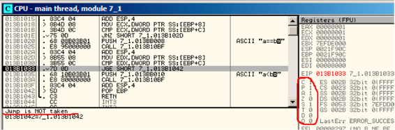

第十二章
条件跳转
12.1 简单的例子
现在我们来了解条件跳转。
#include <stdio.h>
void f_signed (int a, int b)
{
if (a>b)
printf ("a>b");
if (a==b)
printf ("a==b");
if (a<b)
printf ("a<b");
};
void f_unsigned (unsigned int a, unsigned int b)
{
if (a>b)
printf ("a>b");
if (a==b)
printf ("a==b");
if (a<b)
printf ("a<b");
};
int main()
{
f_signed(1, 2);
f_unsigned(1, 2);
return 0;
};
12.1.1 x86
x86 + MSVC
f_signed() 函数:
Listing 12.1: 非优化MSVC 2010
_a$ = 8
_b$ = 12
_f_signed PROC
push ebp
mov ebp, esp
mov eax, DWORD PTR _a$[ebp]
cmp eax, DWORD PTR _b$[ebp]
jle SHORT $LN3@f_signed
push OFFSET $SG737 ; ’a>b’
call _printf
add esp, 4
$LN3@f_signed:
mov ecx, DWORD PTR _a$[ebp]
cmp ecx, DWORD PTR _b$[ebp]
jne SHORT $LN2@f_signed
push OFFSET $SG739 ; ’a==b’
call _printf
add esp, 4
$LN2@f_signed:
mov edx, DWORD PTR _a$[ebp]
cmp edx, DWORD PTR _b$[ebp]
jge SHORT $LN4@f_signed
push OFFSET $SG741 ; ’a<b’
call _printf
add esp, 4
$LN4@f_signed:
pop ebp
ret 0
_f_signed ENDP
第一个指令JLE意味如果小于等于则跳转。换句话说，第二个操作数大于或者等于第一个操作数，控制流将传递到指定地址或者标签。否则（第二个操作数小于第一个操作数）第一个printf()将被调用。第二个检测JNE：如果不相等则跳转。如果两个操作数相等控制流则不变。第三个检测JGE：大于等于跳转，当第一个操作数大于或者等于第二个操作数时跳转。如果三种情况都没有发生则无printf()被调用，事实上，如果没有特殊干预，这种情况几乎不会发生。
f_unsigned()函数类似，只是JBE和JAE替代了JLE和JGE，我们来看f_unsigned()函数
Listing 12.2: GCC
_a$ = 8 ; size = 4
_b$ = 12 ; size = 4
_f_unsigned PROC
push ebp
mov ebp, esp
mov eax, DWORD PTR _a$[ebp]
cmp eax, DWORD PTR _b$[ebp]
jbe SHORT $LN3@f_unsigned
push OFFSET $SG2761 ; ’a>b’
call _printf
add esp, 4
$LN3@f_unsigned:
mov ecx, DWORD PTR _a$[ebp]
cmp ecx, DWORD PTR _b$[ebp]
jne SHORT $LN2@f_unsigned
push OFFSET $SG2763 ; ’a==b’
call _printf
add esp, 4
$LN2@f_unsigned:
mov edx, DWORD PTR _a$[ebp]
cmp edx, DWORD PTR _b$[ebp]
jae SHORT $LN4@f_unsigned
push OFFSET $SG2765 ; ’a<b’
call _printf
add esp, 4
$LN4@f_unsigned:
pop ebp
ret 0
_f_unsigned ENDP
几乎是相同的，不同的是：JBE-小于等于跳转和JAE-大于等于跳转。这些指令(JA/JAE/JBE/JBE)不同于JG/JGE/JL/JLE，它们使用无符号值。
我们也可以看到有符号值的表示(35)。因此我们看JG/JL代替JA/JBE的用法或者相反，我们几乎可以确定变量的有符号或者无符号类型。
main()函数没有什么新的内容：
Listing 12.3: main()
_main PROC
push ebp
mov ebp, esp
push 2
push 1
call _f_signed
add esp, 8
push 2
push 1
call _f_unsigned
add esp, 8
xor eax, eax
pop ebp
ret 0
_main ENDP
10.1.2 x86 + MSVC + OllyDbg
我们在OD里允许例子来查看标志寄存器。我们从f_unsigned()函数开始。CMP执行了三次，每次的参数都相同，所以标志位也相同。
第一次比较的结果：fig. 12.1.标志位：C=1, P=1, A=1, Z=0, S=1, T=0, D=0, O=0.标志位名称为OD对其的简称。
当CF=1 or ZF=1时JBE将被触发，此时将跳转。
接下来的条件跳转：fig. 12.2.当ZF=0（zero flag）时JNZ则被触发
第三个条件跳转：fig. 12.3.我们可以发现14当CF=0 (carry flag)时，JNB将被触发。在该例中条件不为真，所以第三个printf()将被执行。
Figure 12.1: OllyDbg: f_unsigned(): 第一个条件跳转
Figure 12.2: OllyDbg: f_unsigned(): 第二个条件跳转
Figure 12.3: OllyDbg: f_unsigned(): 第三个条件跳转
现在我们在OD中看f_signed()函数使用有符号值。
可以看到标志寄存器：C=1, P=1, A=1, Z=0, S=1, T=0, D=0, O=0.
第一种条件跳转JLE将被触发fig. 12.4.我们可以发现14，当ZF=1 or SF≠OF。该例中SF≠OF，所以跳转将被触发。
下一个条件跳转将被触发：如果ZF=0 (zero flag): fig. 12.5.
第三个条件跳转将不会被触发，因为仅有SF=OF，该例中不为真: fig. 12.6.
Figure 12.4: OllyDbg: f_signed(): 第一个条件跳转
Figure 12.5: OllyDbg: f_signed(): 第二个条件跳转

Figure 12.6: OllyDbg: f_signed(): 第三个条件跳转
x86 + MSVC + Hiew
我们可以修改这个可执行文件，使其无论输入的什么值f_unsigned()函数都会打印“a==b”。
在Hiew中查看：fig. 12.7.
我们要完成以下3个任务：
- 使第一个跳转一直被触发；
- 使第二个跳转从不被触发；
- 使第三个跳转一直被触发。 我们需要使代码流进入第二个printf()，这样才一直打印“a==b”。
三个指令（或字节）应该被修改：
- 第一个跳转修改为JMP，但跳转偏移值不变。
- 第二个跳转有时可能被触发，我们修改跳转偏移值为0后，无论何种情况，程序总是跳向下一条指令。跳转地址等于跳转偏移值加上下一条指令地址，当跳转偏移值为0时，跳转地址就为下一条指令地址，所以无论如何下一条指令总被执行。
- 第三个跳转我们也修改为JMP，这样跳转总被触发。 修改后：fig. 12.8.
如果忘了这些跳转，printf()可能会被多次调用，这种行为可能是我们不需要的。
Figure 12.7: Hiew: f_unsigned() 函数
Figure 12.8: Hiew:我们修改 f_unsigned() 函数
Non-optimizing GCC
GCC 4.4.1非优化状态产生的代码几乎一样，只是用puts() (2.3.3) 替代 printf()。
12.1.5 Optimizing GCC
细心的读者可能会问，为什么要多次执行CMP，如果标志寄存器每次都相同呢？可能MSVC不会做这样的优化，但是GCC 4.8.1可以做这样的深度优化：
Listing 12.4: GCC 4.8.1 f_signed()
f_signed:
mov eax, DWORD PTR [esp+8]
cmp DWORD PTR [esp+4], eax
jg .L6
je .L7
jge .L1
mov DWORD PTR [esp+4], OFFSET FLAT:.LC2 ; "a<b"
jmp puts
.L6:
mov DWORD PTR [esp+4], OFFSET FLAT:.LC0 ; "a>b"
jmp puts
.L1:
rep ret
.L7:
mov DWORD PTR [esp+4], OFFSET FLAT:.LC1 ; "a==b"
jmp puts
我们可以看到JMP puts替代了CALL puts/RETN。稍后我们介绍这种情况11.1.1.。
不用说，这种类型的x86代码是很少见的。MSVC2012似乎不会这样做。其他情况下，汇编程序能意识到此类使用。如果你在其它地方看到此类代码，更可能是手工构造的。
f_unsigned()函数代码：
Listing 12.5: GCC 4.8.1 f_unsigned()
f_unsigned:
push esi
push ebx
sub esp, 20
mov esi, DWORD PTR [esp+32]
mov ebx, DWORD PTR [esp+36]
cmp esi, ebx
ja .L13
cmp esi, ebx ; instruction may be removed
je .L14
.L10:
jb .L15
add esp, 20
pop ebx
pop esi
ret
.L15:
mov DWORD PTR [esp+32], OFFSET FLAT:.LC2 ; "a<b"
add esp, 20
pop ebx
pop esi
jmp puts
.L13:
mov DWORD PTR [esp], OFFSET FLAT:.LC0 ; "a>b"
call puts
cmp esi, ebx
jne .L10
.L14:
mov DWORD PTR [esp+32], OFFSET FLAT:.LC1 ; "a==b"
add esp, 20
pop ebx
pop esi
jmp puts
因此，GCC 4.8.1的优化算法并不总是完美的。
12.2.1ARM
32-bit ARM
Keil + ARM mode优化后
Listing 12.6: Optimizing Keil + ARM mode
.text:000000B8 EXPORT f_signed
.text:000000B8 f_signed ; CODE XREF: main+C
.text:000000B8 70 40 2D E9 STMFD SP!, {R4-R6,LR}
.text:000000BC 01 40 A0 E1 MOV R4, R1
.text:000000C0 04 00 50 E1 CMP R0, R4
.text:000000C4 00 50 A0 E1 MOV R5, R0
.text:000000C8 1A 0E 8F C2 ADRGT R0, aAB ; "a>b
"
.text:000000CC A1 18 00 CB BLGT __2printf
.text:000000D0 04 00 55 E1 CMP R5, R4
.text:000000D4 67 0F 8F 02 ADREQ R0, aAB_0 ; "a==b
"
.text:000000D8 9E 18 00 0B BLEQ __2printf
.text:000000DC 04 00 55 E1 CMP R5, R4
.text:000000E0 70 80 BD A8 LDMGEFD SP!, {R4-R6,PC}
.text:000000E4 70 40 BD E8 LDMFD SP!, {R4-R6,LR}
.text:000000E8 19 0E 8F E2 ADR R0, aAB_1 ; "a<b
"
.text:000000EC 99 18 00 EA B __2printf
.text:000000EC ; End of function f_signed
ARM下很多指令只有某些标志位被设置时才会被执行。比如做数值比较时。
举个例子，ADD实施上是ADDAL，这里的AL是Always，即总被执行。判定谓词是32位ARM指令的高4位（条件域）。无条件跳转的B指令其实是有条件的，就行其它任何条件跳转一样，只是条件域为AL，这意味着总是被执行，忽略标志位。
ADRGT指令就像和ADR一样，只是该指令前面为CMP指令，并且只有前面数值大于另一个数值时（Greater Than）时才被执行。
接下来的BLGT行为和BL一样，只有比较结果符合条件才能出发（Greater Than）。ADRGT把字符串“a>b ”的地址写入R0，然后BLGT调用printf()。因此，这些指令都带有GT后缀，只有当R0（a值）大于R4（b值）时指令才会被执行。
然后我们看ADREQ和BLEQ，这些指令动作和ADR及BL一样，只有当两个操作数对比后相等时才会被执行。这些指令前面是CMP（因为printf()调用可能会修改状态标识）。 然后我们看LDMGEFD，该指令行为和LDMFD指令一样1，仅仅当第一个值大于等于另一个值时（Greater Than），指令才会被执行。
“LDMGEFD SP!, {R4-R6,PC}”恢复寄存器并返回，只是当a>=b时才被触发，这样之后函数才执行完成。但是如果a<b，触发条件不成立是将执行下一条指令LDMFD SP!, {R4-R6,LR}，该指令保存R4-R6寄存器，使用LR而不是PC，函数并不返回。最后两条指令是执行printf()（5.3.2）。
f_unsigned与此一样只是使用对应的指令为ADRHI, BLHI及LDMCSFD，判断谓词（HI = Unsigned higher, CS = Carry Set (greater than or equal)）请类比之前的说明，另外就是函数内部使用无符号数值。
我们来看一下main()函数：
Listing 12.7: main()
.text:00000128 EXPORT main
.text:00000128 main
.text:00000128 10 40 2D E9 STMFD SP!, {R4,LR}
.text:0000012C 02 10 A0 E3 MOV R1, #2
.text:00000130 01 00 A0 E3 MOV R0, #1
.text:00000134 DF FF FF EB BL f_signed
.text:00000138 02 10 A0 E3 MOV R1, #2
.text:0000013C 01 00 A0 E3 MOV R0, #1
.text:00000140 EA FF FF EB BL f_unsigned
.text:00000144 00 00 A0 E3 MOV R0, #0
.text:00000148 10 80 BD E8 LDMFD SP!, {R4,PC}
.text:00000148 ; End of function main
这就是ARM模式如何避免使用条件跳转。
这样做有什么好处呢？因为ARM使用精简指令集（RISC）。简言之，处理器流水线技术受到跳转的影响，这也是分支预测重要的原因。程序使用的条件或者无条件跳转越少越好，使用断言指令可以减少条件跳转的使用次数。
x86没有这也的功能，通过使用CMP设置相应的标志位来触发指令。
Optimizing Keil + thumb mode
Listing 12.8: Optimizing Keil + thumb mode
.text:00000072 f_signed ; CODE XREF: main+6
.text:00000072 70 B5 PUSH {R4-R6,LR}
.text:00000074 0C 00 MOVS R4, R1
.text:00000076 05 00 MOVS R5, R0
.text:00000078 A0 42 CMP R0, R4
.text:0000007A 02 DD BLE loc_82
.text:0000007C A4 A0 ADR R0, aAB ; "a>b
"
.text:0000007E 06 F0 B7 F8 BL __2printf
.text:00000082
.text:00000082 loc_82 ; CODE XREF: f_signed+8
.text:00000082 A5 42 CMP R5, R4
.text:00000084 02 D1 BNE loc_8C
.text:00000086 A4 A0 ADR R0, aAB_0 ; "a==b
"
.text:00000088 06 F0 B2 F8 BL __2printf
.text:0000008C
.text:0000008C loc_8C ; CODE XREF: f_signed+12
.text:0000008C A5 42 CMP R5, R4
.text:0000008E 02 DA BGE locret_96
.text:00000090 A3 A0 ADR R0, aAB_1 ; "a<b
"
.text:00000092 06 F0 AD F8 BL __2printf
.text:00000096
.text:00000096 locret_96 ; CODE XREF: f_signed+1C
.text:00000096 70 BD POP {R4-R6,PC}
.text:00000096 ; End of function f_signed
仅仅Thumb模式下的B指令可能需要条件代码辅助，所以thumb代码看起来更普通一些。
BLE通常是条件跳转小于或等于（Less than or Equal），BNE—不等于（Not Equal），BGE—大于或等于（Greater than or Equal）。
f_unsigned函数是同样的，只是使用的指令用来处理无符号数值：BLS (Unsigned lower or same) 和BCS (Carry Set (Greater than or equal)).